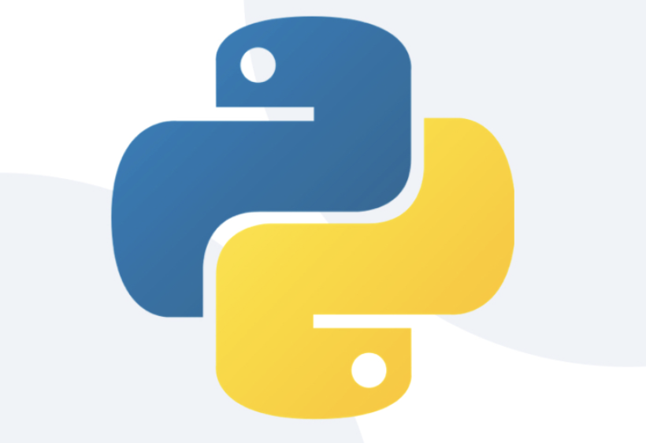
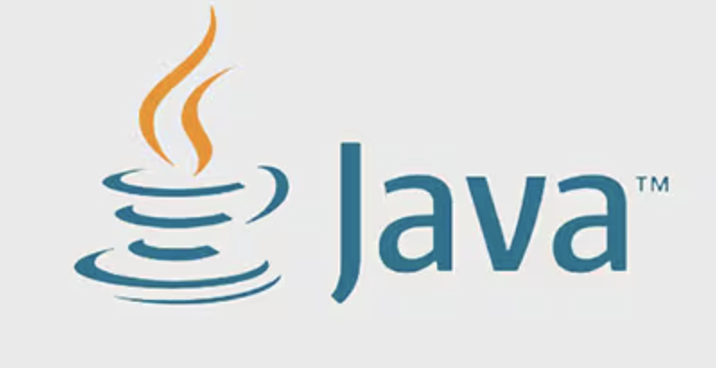
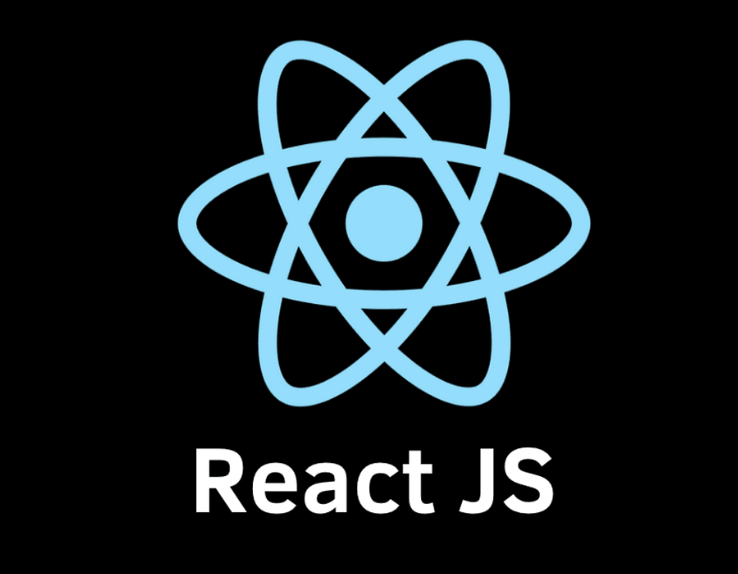
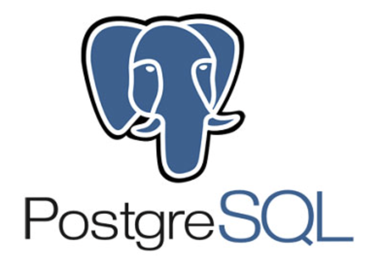
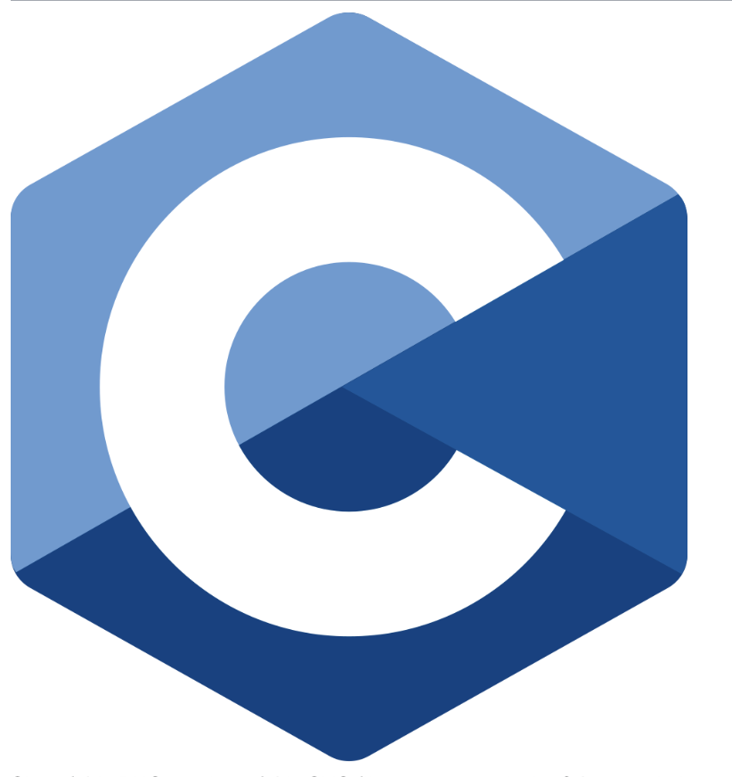

Technical Arsenal
A comprehensive breakdown of the programming languages, frameworks, and theoretical concepts I apply to software engineering and data science challenges.





These logos visually summarize my technical toolkit. They represent the specific languages and frameworks (Python, Java, React JS, PostgreSQL, and C) I have actively chosen to specialize in to achieve my goal of building scalable software.
Tech Spotlight: The Future of AI
This TED Talk explores the transformative power of Artificial Intelligence. I included this because it aligns with my passion for engineering intelligent systems, like my NLP fake news classifier, to create positive real-world impacts.
Languages & Frameworks
- Web & Mobile: React, React Native, Expo
- Backend: FastAPI, Node.js fundamentals
- Core Languages: Python, Java, C
- Frontend Fundamentals: HTML5, CSS3, JavaScript (ES6+)
Data Science & Machine Learning
- AI Models: Natural Language Processing (NLP), BERT Models
- Algorithms: Content-Based Filtering, Predictive Modeling
- Data Handling: Data Analysis, Pipeline Construction
- Libraries: Pandas, NumPy, Scikit-learn (assumed proficiency)
Tools & Methodologies
- Version Control: Git & GitHub
- Environments: VS Code, Jupyter Notebooks
- Concepts: Full-Stack Architecture, RESTful APIs
- Workflow: Agile Development, UI/UX Principles